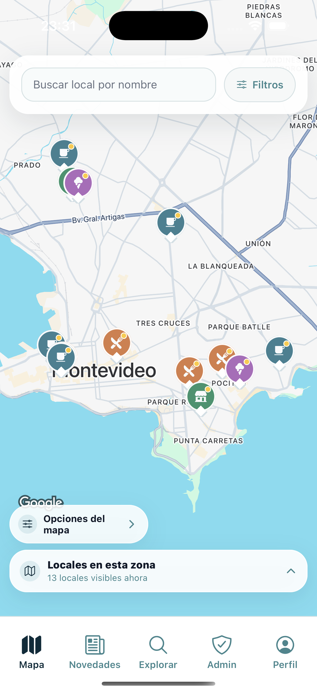
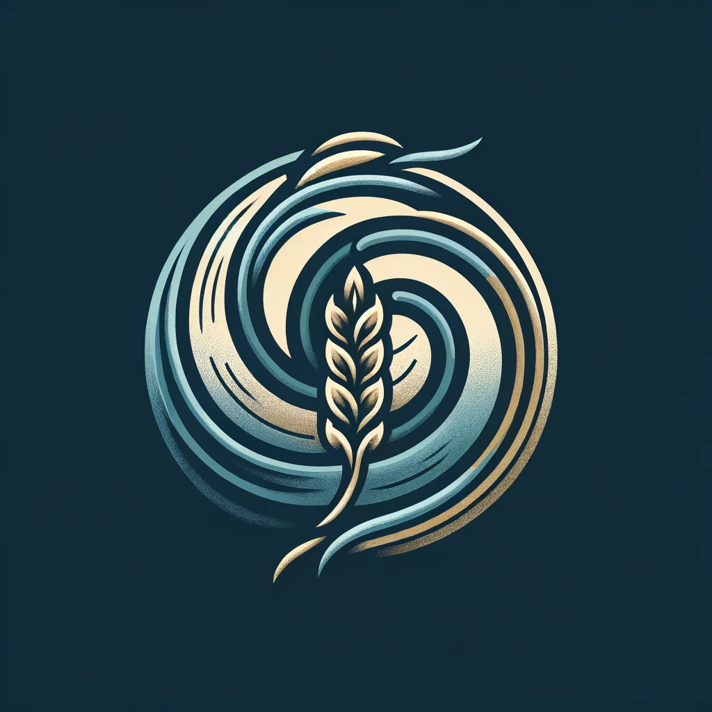
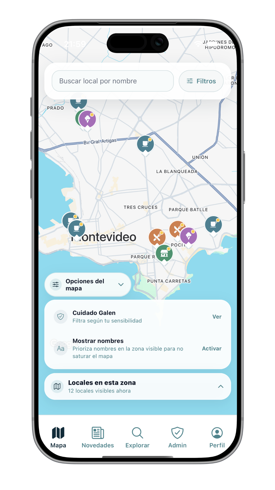
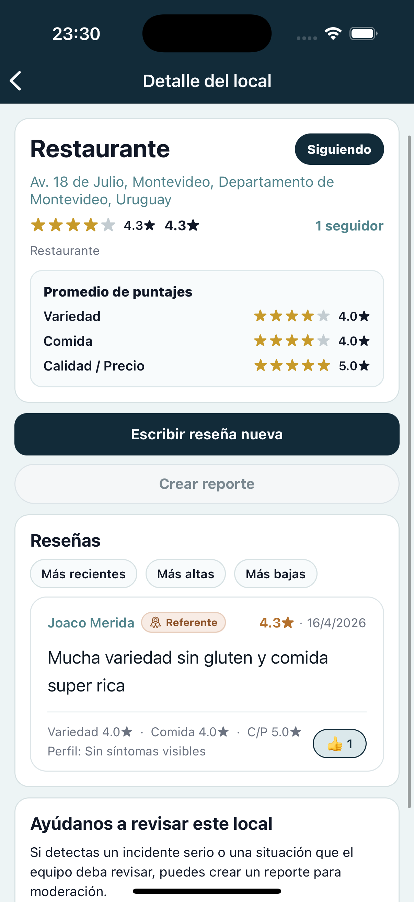

Mapa
Encontrá opciones cerca tuyo.
Explorá lugares, categorías y datos útiles para decidir con menos vueltas.


GalenHecha para decidir mejor en el día a día
Descubrí lugares, leé reseñas y consultá productos en una app pensada para ayudarte a decidir con más claridad.

La información que ves está previamente validada por nuestro equipo de moderación.

Descargá Galen
Encontrá productos y lugares sin gluten en Uruguay desde tu celular. Galen está disponible gratis para iPhone y Android.
La disponibilidad puede variar según tu país o dispositivo.
La experiencia
Desde el mapa hasta las reseñas y el catálogo de productos, Galen organiza señales clave para ayudarte a elegir con más claridad.
Explorá lugares, categorías y datos útiles para decidir con menos vueltas.

Accedé a puntajes, contexto y datos útiles en una sola vista.

Lo importante
Lo que ves en la app pasa por validación y moderación antes de ganar visibilidad.
Buscá productos registrados como libres de gluten ante las autoridades uruguayas.
Lugares, reseñas y productos se presentan para ayudarte a elegir con más claridad.
Productos · RUNAEV
Galen acerca información pública del Registro Único Nacional de Alimentos, Empresas y Vehículos para ayudarte a consultar productos libres de gluten desde el celular.
Consultar la fuente oficial RUNAEVEncontrá rápido un producto por nombre o marca y revisá su información disponible.
Consultá el estado informado por RUNAEV antes de decidir una compra.
Marcá favoritos y sumá reseñas para que la experiencia también sea útil para otras personas.
Producto
Galen organiza información útil para evaluar opciones gastronómicas con más claridad.
Accedé a fichas de locales, categorías y señales clave para entender mejor cada opción.
Las experiencias se presentan de forma que ayuden a interpretar mejor lo que puede servirte.
Buscá productos registrados en RUNAEV y revisá su estado desde una experiencia simple.
Tené más a mano las opciones que te interesan y seguí sus cambios con el tiempo.
La app reúne novedades y avisos relevantes para que no dependas de información dispersa.
Hay herramientas internas para validar contenido, ordenar señales y sostener la calidad general de la información.